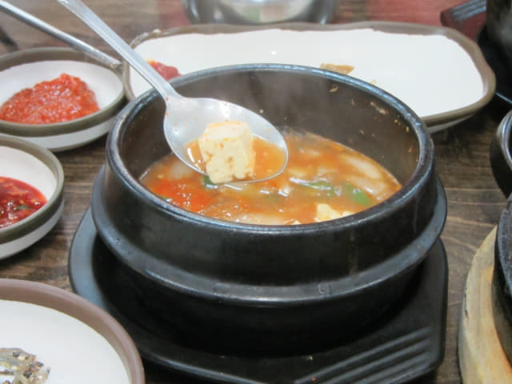

因我們是搭乘下午14:50的航班離開韓國, 所以便利用早上的時間步行往釜山沙上近鄰公園遊覽, 也是這韓國春天之旅的最後一個行程, 釜山沙上近鄰公園十分清幽, 風景優美, 是很好的壓軸行程, 令這旅程更加完美。遊覽完畢, 於早上十一時二十五分返回我們下榻的沙上區路易斯酒店, 每個旅程最依依不捨的時間終於來到, 正式踏上歸途了! 回想這二十二天的韓國旅程, 感覺好像是剛剛開始的, 真有點捨不得離開。
按計劃, 我們先往 Home plus 6F 美食街吃午餐, 然後才乘輕軌往釜山金海機場。從 Home plus 百貨大樓對面的掛法 Renecite 站 乘輕軌往釜山金海國際機場, 車程只需六分鐘, 車資只是 1,300 韓元, 省回不少時間和金錢, 真是快捷便宜。所以如果只在釜山停留一晚的朋友, 可考慮在沙上區住宿。
負上重重的背囊, 乘電梯往一樓辦理完 Check Out 手續, 於早上十一時五十分離開酒店。
釜山沙上區 Home plus 6F 美食街 豐富滋味午餐
穿過釜山沙上客運站, 再走一會便來到 Home plus 百貨大樓, 乘電梯往 6F 美食街, 這次想轉轉胃口, 打算選擇了另一間食店吃午餐, 在美食街走了一會, 看見其中一間的圖片菜單十分吸引, 便立即決定在這裡吃午餐。
大大盤的鐵板炒牛肉, 用料十足, 就是牆上最大的圖片, 是食店的招牌菜, 單看圖片已流口水, 最重要是價錢便宜, 每客只是 7,000 韓元, 。
牛骨湯鍋, 圖片也十分吸引, 每客同樣是 7,000 韓元。
坐下來, 按圖片叫了一客大大盤的牛肉鍋和一客牛骨湯鍋。
坐了一會, 先送來我最喜愛的沙拉菜葉, 有六種不同的沙拉菜葉, 十分新鮮, 原來紅葉頭葉也可做沙拉菜!
前菜也陸續送上, 十分豐富。
主菜也送來了, 頓時香氣撲鼻, 已感覺到口角充滿了口水! 果然十分吸引, 份量也十足。
原來前菜還有一個海鮮豆腐湯鍋, 更加超值!

鐵板炒牛肉。
牛骨湯鍋。
主菜和配菜的味道都十分好, 尤其是將炒牛肉包在沙拉菜葉一同吃, 分外滋味! 最後還免費追加了一盤沙拉菜葉。最後吃得肚子漲漲的, 十分滿足, 真想不到這韓國之程在韓國最後的一餐可以那麼完美!